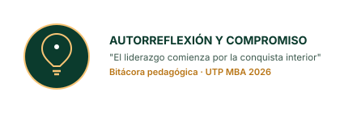
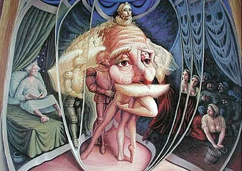
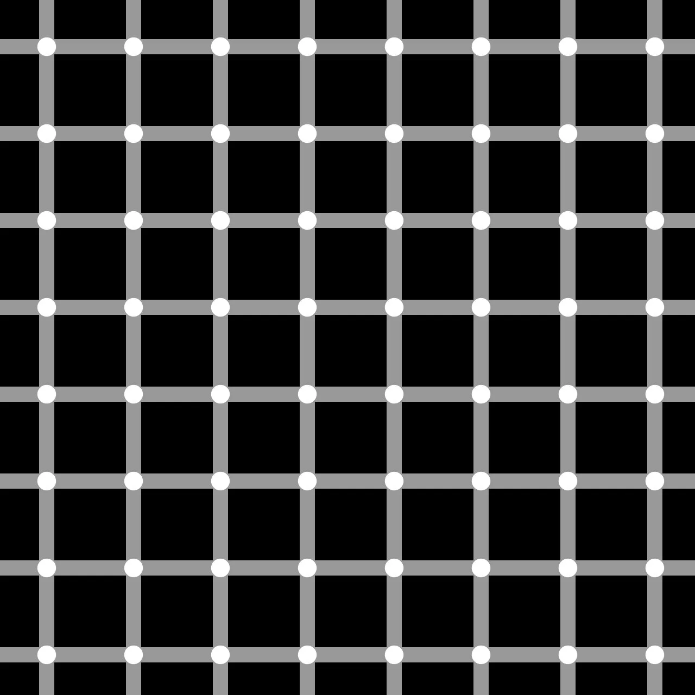
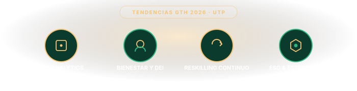

"El verdadero liderazgo comienza con el liderazgo de sí mismo."
Docente
M. E. López Duque
Inicio
Marzo 14 · 2026
Institución
UTP · Pereira
Módulos
6 Módulos
📋 Agenda del Seminario
01
Normas de convivencia y aprendizaje
02
Presentación del Programa
03
Contenido del Seminario — 6 Módulos
04
Metodología del Seminario
05
Evaluación de la Sesión
Punto 01
Normas de Convivencia y Aprendizaje
Uso del Celular
Mantén el teléfono en silencio. Úsalo solo para actividades académicas relacionadas con la sesión.
Participación Activa
Participa con respeto y apertura. Cada perspectiva enriquece el aprendizaje colectivo del grupo.
Cumplimiento de Compromisos
Entrega trabajos en las fechas acordadas. El compromiso individual impacta positivamente al grupo.
Puntualidad
Llega a tiempo a todas las sesiones. Respetar el tiempo es un valor esencial del líder consciente.
¿Qué esperas del seminario?
Reflexiona: ¿cuáles son tus metas, expectativas y compromisos con este proceso de aprendizaje?

Punto 02
Objetivos del Seminario
Objetivo General
Construir empresas competitivas a través del liderazgo y las personas
Guiar a los profesionales en el desarrollo y fortalecimiento de sus competencias en liderazgo y gestión de las personas, para la construcción de empresas competitivas.
1
Conceptualizar alrededor del Liderazgo de sí mismo.
2
Evaluar los ambientes de trabajo desde el conflicto individual, grupal y organizacional.
3
Aplicar las técnicas facilitadoras en el proceso de la gestión gerencial.
4
Analizar los cambios al interior de las organizaciones como facilitadores de transformación.
5
Identificar las tendencias globales del capital humano.
Resultados Esperados
Resultados de Aprendizaje
RA1
Analiza las habilidades personales que requiere desarrollar y fortalecer para ejercer el liderazgo de sí mismo y en las organizaciones.
RA2
Reconoce los fundamentos de las conversaciones y es consciente de los mundos que genera a partir de cómo las realiza para lograr transformaciones individuales, grupales y organizacionales.
RA3
Aplica las técnicas facilitadoras en el proceso de gestión humana para conducir a las personas en el logro de los objetivos individuales y organizacionales.
RA4
Comprende las tendencias globales del capital humano para la construcción de organizaciones competitivas.
Punto 03
Contenido del Seminario — 6 Módulos
Haz clic en cada módulo para expandir su descripción y enfoque temático.
▶ Ver Módulo
MÓD. I
Liderazgo de Sí Mismo
Autoconocimiento, inteligencia emocional y construcción de la identidad del líder. El punto de partida de todo proceso de transformación genuina.
▶ Ver Módulo
MÓD. II
Facilitación y Facilitador(a)
Arte, Ciencia y Tecnología. Principios, competencias y herramientas del facilitador organizacional. Incluye: Confiar e Inspirar — Covey.
▶ Ver Módulo
MÓD. III
Estilos de Facilitación y Motivación
Modelos facilitadores, teorías motivacionales y su aplicación gerencial. Conectar propósito con desempeño individual y colectivo.
▶ Ver Módulo
MÓD. IV
Comunicación y Escucha Empática
Empoderamiento lingüístico, rapport, rastreo y parafraseo. Escucha empática como base de la facilitación genuina.
▶ Ver Módulo
MÓD. V
Capital Humano Competitivo
Atracción, retención, desarrollo del talento y cultura como ventaja competitiva sostenible en 2026.
▶ Ver Módulo
MÓD. VI
Tendencias Modernas de la Gestión Humana
Competencias 2026, onboarding estratégico y las 8 tendencias que redefinen el rol del líder de talento humano.
Sistema de Evaluación
¿Cómo serás evaluado?
30%
Trabajos Individuales
Ensayos analíticos, reflexiones escritas y actividades de autoexploración del liderazgo personal.
30%
Trabajos Grupales
Proyectos colaborativos, talleres de equipos y co-creación de conocimiento organizacional.
40%
Exposiciones
Presentaciones orales, defensa de propuestas y sustentación de proyectos integradores.
Punto 04 — Metodología
Aprender Haciendo
El conocimiento surge de la interacción entre teoría, reflexión y práctica profesional.
Seminario Investigativo
Método base
▼
Exploración crítica de problemas reales del entorno gerencial con base en evidencia. Los participantes investigan, cuestionan y proponen desde sus propios contextos profesionales.
Exposiciones
Comunicación ejecutiva
▼
Presentaciones que desarrollan síntesis, argumentación y comunicación ejecutiva. Cada exposición es una oportunidad de liderar desde el conocimiento y la convicción.
Talleres Individuales
Autoexploración
▼
Ejercicios de autorreflexión, casos y diarios de aprendizaje para el crecimiento personal. El conocimiento más valioso comienza en el espejo del propio liderazgo.
Talleres Grupales
Inteligencia colectiva
▼
Dinámicas colaborativas que potencian la inteligencia colectiva y el trabajo en equipo. Cuando la diversidad de perspectivas se une, emergen soluciones que ningún individuo podría alcanzar solo.
Módulo I
Introducción al Liderazgo y la Gestión del Talento Humano
Personas, propósito y resultados — la tríada del siglo XXI.
Contexto Actual 2025
Desafíos del Siglo XXI
Haz clic en cada desafío para explorar su impacto en las organizaciones y el liderazgo.
Inteligencia Artificial y Automatización
→
Globalización e Hiperinterdependencia
→
Diversidad Generacional
→
Atracción y Retención del Talento
→
Sostenibilidad y Responsabilidad ESG
→
Bienestar y Salud Mental Organizacional
→
El líder del Siglo XXI
Retos de los Líderes
No solo dirige procesos. Gestiona personas, propósito y transformación.
1
Liderar con propósito e impacto humano
Conectar estrategia organizacional con el sentido y bienestar de las personas.
2
Navegar la incertidumbre (VUCA/BANI)
Tomar decisiones ágiles en contextos volátiles, ambiguos y complejos.
3
Construir estrategia global sostenible
Pensar y actuar en ecosistemas internacionales, conectados y en constante cambio.
4
Adoptar y gestionar nuevas tecnologías
Liderar transformación digital sin perder el foco en las personas.
5
Gestionar talento e inteligencia colectiva
Crear condiciones para que los equipos aprendan, colaboren e innoven juntos.
6
Explorar nuevos modelos de liderazgo
Estructuras ágiles, propósitos compartidos y formas de trabajo híbridas.
7
Valores, ética y responsabilidad ESG
Liderar con integridad, transparencia y compromiso con la sostenibilidad.
Competencias Clave
Habilidades y Competencias de los Líderes
Cada competencia responde a un desafío concreto del líder contemporáneo. Haz clic para explorar.
Inteligencia Emocional
→ Bienestar y liderazgo de sí mismo
→
Pensamiento Sistémico
→ Complejidad e incertidumbre
→
Alfabetización Digital e IA
→ Automatización y transformación
→
Influencia y Comunicación Social
→ Diversidad generacional
→
Aprendizaje Activo y Adaptabilidad
→ Cambio acelerado
→
Gestión de Talento Colectivo
→ Atracción, retención y ESG
→
GTH Estratégica
Del área operativa al Socio Estratégico
La GTH ya no se limita a nómina y reclutamiento. Es el motor de la estrategia y la cultura.
👥
Gestión del Talento e Inteligencia Colectiva
"La GTH ya no se limita a nómina y reclutamiento. Es el motor de la estrategia, la cultura y la ventaja competitiva sostenible."
Estrategia de Negocio
▼
La GTH diseña la arquitectura de talento que soporta la estrategia: perfiles, capacidades y cultura necesarias para competir y crecer.
Conectar Personas con Propósito
▼
Las personas comprometidas con el propósito organizacional producen más, innovan más y construyen culturas más resilientes y humanas.
Inteligencia Colectiva
▼
Cuando el conocimiento fluye entre personas y equipos, la organización aprende más rápido que sus competidores. La colaboración multiplica el talento.
Gestión del Cambio
▼
La GTH facilita la transformación organizacional: prepara, acompaña y gestiona la resistencia al cambio con metodología, empatía y claridad estratégica.
Ventaja Competitiva
Los Pilares del Talento Competitivo
Haz clic en cada pilar para explorar su rol en la construcción de organizaciones competitivas.
Conocimientos
Saber teórico y técnico
→
Habilidades
Capacidades en acción
→
Actitudes y Valores
Motor del propósito
→
Competencias Digitales
Transformación digital
→
Son aprendidas y desarrollables
No son atributos fijos
→
Medición, desarrollo e impacto
360°, OKR, assessment
→
El instrumento del talento
El Aprendizaje como Motor
"El aprendizaje es el único activo que crece cuanto más se comparte."
EL APRENDIZAJE
"La recompensa del maestro es el éxito del estudiante." — Proverbio Persa
Aprendizaje Colaborativo
▼
Aprender hacia la ganancia global. La inteligencia colectiva siempre supera a la individual. El conocimiento compartido se multiplica exponencialmente.
Aprendizaje como Acción
▼
Aprender es ir en busca, descubrir, atrapar: aprehensión activa. Implica curiosidad, riesgo y compromiso. No hay aprendizaje sin movimiento.
Desaprender para Crecer
▼
La capacidad de desaprender esquemas obsoletos y adoptar nuevas perspectivas es tan valiosa como el conocimiento mismo. El futuro exige mentes flexibles.
¿QUÉ DEBE SER EL APRENDIZAJE?
Éxito
Metas concretas
Crecimiento
Amplía perspectivas
Superación
Zona de confort
Progreso
Camino continuo
Cambio Positivo
Transformación
Innovación
Creatividad
Gestión Integral
¿Cómo Gestionar el Talento Humano?
Desarrollo integral de habilidades, combinando las siguientes dimensiones:
Conocimientos
Saber teórico y contextual
→
Valores
Principios éticos
→
Habilidades
Capacidades prácticas
→
Actitudes
Disposición y resiliencia
→
Motivación y Propósito
Energía interna
→
Percepciones y Conductas
Cómo interpretamos el mundo
→
"
Procura ser tan grande que todos quieran alcanzarte y tan humilde que todos quieran estar contigo.
— Mahatma Gandhi
Cierre del Módulo
Conclusiones
"El ser humano es, en esencia, un ser en aprendizaje permanente."
Liderazgo, talento y aprendizaje: tres dimensiones de una misma vocación humana.
1
El liderazgo comienza desde adentro
Quien no se lidera a sí mismo no puede liderar equipos ni organizaciones. La autoconciencia es el punto de partida de toda transformación genuina.
2
La GTH es estrategia, no soporte administrativo
Las organizaciones que tratan el talento como ventaja competitiva construyen culturas más resilientes, innovadoras y capaces de adaptarse al cambio.
3
El aprendizaje continuo es la única certeza
En un mundo VUCA, la capacidad de aprender, desaprender y reaprender es la competencia más valiosa de cualquier profesional o equipo.
4
Las personas son el propósito
Detrás de cada estrategia y resultado hay personas. Gestionar con humanidad, propósito y rigor es el reto más grande y más noble del liderazgo contemporáneo.
Módulo II · Sesión 2
Facilitación y Facilitador(a)
Arte · Ciencia · Tecnología
Id donde esté la gente.
Aprended de ella.
Mostradle su amor.
Partid de lo que ya sabe.
Construid sobre lo que ya ha hecho. Y sabremos que hemos sido exitosos cuando ellos digan: 'Lo hicimos nosotros mismos'.
— Lao Tse · 700 a.C.
Docente
M. E. López Duque
Sesión 2
Marzo 14, 2026
Módulo
II de VI
📋 Agenda — Sesión 2
01
Revisión y comentarios · Compromiso sesión anterior
02
Tema: Facilitación y Facilitador(a)
03
Confiar e Inspirar — Stephen M. R. Covey
04
Prácticas y Tarea
"
Tres tesoros poseo y guardo: el Amor, la Sobriedad y el no atreverme a anteponerme a nadie. Al tener amor, soy fuerte. Por la sobriedad, soy generoso. Por no osaR anteponerme a nadie, soy idóneo para guía.
— Lao Tse · Tao Te King · Los Tres Tesoros del Líder
Punto 02
Objetivos de la Sesión
Objetivo General
Apropiar los conceptos de Facilitación y Facilitador
Comprender la facilitación como arte, ciencia y tecnología, e identificar las características, competencias y herramientas del facilitador para potenciar procesos grupales e individuales.
1
Definir los conceptos de facilitación y facilitador.
2
Identificar las características del facilitador.
3
Explicar las competencias del facilitador.
4
Enunciar y describir los axiomas de la facilitación.
5
Describir cómo algunos roles de pseudo-facilitación pueden convertirse en roles genuinos de facilitación.
Fundamentos
La Facilitación es Tres Cosas
No es solo una metodología. Es una forma integral de relacionarse con el conocimiento y las personas.
ARTE
Creatividad e Imaginación
Requiere creatividad, innovación, imaginación y flexibilidad. El facilitador es un artista que crea espacios únicos para cada grupo y momento.
CIENCIA
Base Teórica y Metodológica
Requiere una sólida base teórica, metodológica, epistemológica y evaluativa. Hay principios y marcos que guían cada intervención.
TECNOLOGÍA
Dominio de Técnicas
Requiere el dominio sobre técnicas y habilidades a nivel individual, interpersonal y grupal. Sin herramientas, el arte y la ciencia no se materializan.
¿Qué es Facilitar?
Algunas Definiciones
Diferentes perspectivas sobre el acto de facilitar. Haz clic para expandir cada visión.
Hacer posible y más fácil
Definición básica
▼
→️
Facilitar es hacer posible o más fácil determinado proceso o tarea. Es evocar, catalizar, agilizar, fortalecer o acelerar los recursos y procesos inherentes en cada sistema. En resumen: "Hacer las cosas más fáciles."
Ned Reute, 1999
Enfoque grupal
▼
🤝
Facilitar es utilizar algún nivel de conocimiento de procesos grupales —sea intuitivo o explícito— para formular y realizar algún tipo de intervención, formal o informal, con el fin de ayudar a un grupo a hacer lo que quiere o necesita hacer para lograr lo que quiere o necesita lograr.
Gilbert Brenson L.
Auto-desarrollo
▼
▸
Crear y mantener espacios y procesos sinergénicos de auto-desarrollo individual y grupal. Para lograrlo, se facilita el desarrollo de nuevos conocimientos, destrezas, percepciones y significados.
Facilitación 2025 — Tendencias digitales
Actualización
▼
💻
La facilitación contemporánea incorpora entornos híbridos y virtuales, herramientas digitales colaborativas (Miro, Mentimeter, Jamboard) e inteligencia artificial para procesar y visualizar el conocimiento grupal en tiempo real. El facilitador del siglo XXI también navega la diversidad generacional y cultural en espacios de trabajo globales.
Perfil del Facilitador
Características Personales
El facilitador no solo domina técnicas. Es, ante todo, un ser humano en desarrollo permanente.
1
Se auto-percibe como agente de cambio y da ejemplo
No solo habla de transformación: la encarna en su propia conducta, decisiones y relaciones cotidianas.
2
Actúa con inteligencia y con emoción
Integra razón y emoción. Sabe cuándo analizar con lógica y cuándo conectar desde la empatía y la presencia humana.
3
Cree en la gente y es sensible al prójimo
Ve el potencial donde otros ven limitaciones. Su presencia comunica: "creo en ti, en tu capacidad y en tu grandeza."
4
Es un aprendiz de la vida y auto-reflexivo
No llega con todas las respuestas. Aprende con el grupo, cuestiona sus propias certezas y está abierto a la sorpresa.
5
Sabe manejar la complejidad, la ambigüedad y la incertidumbre
En contextos VUCA/BANI, su calma y claridad son el ancla que el grupo necesita para navegar lo desconocido.
6
Es visionario y guiado por valores definidos
Tiene un norte claro. Sus valores son visibles y consistentes, lo que genera confianza y credibilidad en los grupos que acompaña.
7
Muestra valentía con apropiada humildad
Ejerce liderazgo con coraje cuando es necesario y con humildad cuando el protagonismo debe ser del grupo. Sabe cuándo brillar y cuándo ceder el foco.
Disposición esencial
El Facilitador está Dispuesto a…
Más que técnicas, es una actitud de servicio y presencia. Haz clic para explorar cada disposición.
Disfrutar el trabajo con personas
Vocación de servicio
→
Pensar rápida y lógicamente
Agilidad mental
→
Comunicarse claramente
Impacto y entusiasmo
→
Escuchar y aprender de los demás
Escucha activa
→
Demostrar seguridad con humildad
Autoridad genuina
→
Balance entre eficiencia y eficacia
Co-evolución
→
Competencias profesionales
Competencias del Facilitador
Las seis dimensiones que definen la maestría en facilitación.
Gerencia de sí mismo
Autogestión
→
Proyección de imagen profesional
Presencia y credibilidad
→
Creación del ambiente propicio
Clima de aprendizaje
→
Comunicación y rapport
Conexión genuina
→
Desarrollo de procesos grupales
Inteligencia colectiva
→
Intervenciones facilitadoras
Acción oportuna
→
Principios axiomáticos
Principios y Modelo de Facilitación
P1
Yo soy yo... y mis circunstancias
Lo que nombramos y cómo lo nombramos configura el mundo que habitamos y las posibilidades que somos capaces de ver — Ortega y Gasset.
P2
La realidad es una perspectiva construida desde el lenguaje
No existe una realidad objetiva única: cada persona construye su versión del mundo a través de los relatos, los juicios y las conversaciones que sostiene consigo misma y con los demás.
P3
Coevolucionamos
El facilitador cambia junto con el grupo. No hay neutralidad real: cada intervención transforma a quien interviene también.
P4
Soy un sistema y conformamos sistemas
Cada persona es un sistema complejo y a la vez parte de sistemas más amplios: familia, equipo, organización, sociedad.
P5
La causalidad es circular en los sistemas sociales
No hay causas lineales. Todo se retroalimenta: las conductas crean contextos que a su vez moldean las conductas.
P6
Vis Medicatrix Naturae
El poder curativo de la naturaleza del sistema. Todo lo que necesita cualquier sistema para evolucionar, se encuentra dentro de él.
Modelo de Facilitación
🧑🏫
Facilitador
Tarea
Proceso
Sí mismo
Grupo
El facilitador trabaja en equilibrio permanente entre estos cuatro ejes: la tarea a lograr, el proceso grupal, el grupo mismo y su propia gestión personal.
Herramientas clave
Las Herramientas del Facilitador
Crear un clima facilitador
▼
▸
El clima es el contenedor invisible que hace posible o imposible el aprendizaje. Un ambiente de confianza, respeto y apertura libera el potencial del grupo. Sin clima adecuado, las mejores técnicas no funcionan.
Empoderamiento Lingüístico
▼
💬
El lenguaje no solo describe la realidad: la crea. El facilitador usa el lenguaje con precisión y poder, eligiendo palabras que abren posibilidades, amplían perspectivas y construyen identidades más fuertes en los participantes.
La pregunta vale más que la respuesta
▼
🔍
Una buena pregunta abre un espacio de reflexión que puede durar años. Una respuesta cierra el pensamiento. El arte del facilitador está en formular preguntas que generen inquietud, movilicen perspectivas y inviten al grupo a construir sus propias respuestas. Pregunta poderosa 2025: "¿Qué necesitamos dejar de hacer para que esto funcione?"
Lectura Complementaria
Confiar e Inspirar — Stephen M. R. Covey
#1 Libro de Liderazgo 2022 · Wall Street Journal Bestseller · La nueva forma de liderar en el siglo XXI
📖
La Tesis Central
Del modelo "Mandar y Controlar" al modelo "Confiar e Inspirar"
Aunque nuestro mundo ha cambiado drásticamente, nuestra manera de liderar no lo ha hecho. La gente no quiere que la dirijan; quiere que la guíen. La nueva forma de liderar parte de la creencia de que las personas son creativas, colaboradoras y están llenas de potencial, y el líder que necesitan es el que les inspira a convertirse en la mejor versión de sí mismas.
⛔ Modelo Antiguo
Mandar y Controlar
• Estructuras jerárquicas rígidas
• Conformidad y cumplimiento
• Microgestión y supervisión constante
• Motivación extrínseca (zanahoria y palo)
• Personas como recursos a optimizar
✅ Modelo Covey
Confiar e Inspirar
• Liderazgo como mayordomía (stewardship)
• Confianza mutua y empoderamiento
• Autonomía con rendición de cuentas
• Motivación intrínseca y propósito
• Personas como seres plenos con grandeza
El Marco Práctico
Las 3 Mayordomías del Líder que Confía e Inspira
MODELAR
Sé el ejemplo que inspira
El líder modela con humildad y coraje quién es realmente. Cuando modelas, la gente piensa: "Quiero ser como esa persona." La autenticidad es el cimiento de toda influencia.
CONFIAR
Extiende confianza activamente
Ser confiable Y confiante. Cuando confías, la gente piensa: "Quiero entregar para esa persona." La confianza extendida no es ingenuidad: es la apuesta más inteligente del liderazgo.
INSPIRAR
Conecta con el porqué
Inspirar conectando decisiones con el propósito. Cuando inspiras, la gente piensa: "Quiero contribuir con esa persona." La inspiración enciende el fuego interno que ningún incentivo externo puede sostener.
Paradigmas del líder Confiar e Inspirar
5 Creencias Fundamentales
1
Las personas tienen grandeza en su interior
No son problemas a resolver: son potencial a liberar. El facilitador que adopta esta creencia transforma completamente su manera de relacionarse con los grupos.
2
Las personas son más que empleados: son seres integrales
Tienen familia, emociones, aspiraciones, miedos. Liderarlos como seres completos —no como piezas de un engranaje— multiplica el compromiso genuino.
3
Hay suficiente para todos — mentalidad de abundancia
La colaboración no es ingenuidad. Es la estrategia más inteligente cuando se parte de la creencia de que el éxito de otros no resta el propio.
4
El liderazgo es una mayordomía, no un poder
El líder no posee a sus equipos: los sirve. Su rol es crear condiciones para que otros brillen, no brillar él mismo a costa de los demás.
5
Los líderes crean influencia duradera desde adentro hacia afuera
La influencia genuina nace del carácter, no de la posición. Lo que somos internamente es más poderoso que cualquier título o autoridad formal.
💡 Conexión con la Facilitación
El marco de Covey es una extensión natural de los principios de facilitación que estudiamos en este módulo. Un facilitador que Modela con autenticidad, Confía en la capacidad del grupo y lo Inspira a construir sus propias respuestas, está practicando exactamente lo que Brenson llama "crear espacios sinergénicos de auto-desarrollo." La facilitación es, en esencia, liderazgo que confía e inspira en acción.
"
El Reino de Dios no es cuestión de reglas o normas legalistas, sino de vivir en armonía con Dios, con el prójimo y consigo mismo.
— Romanos 14:17
Para la próxima sesión
Tu Tarea
✍️
1
¿Cuáles son las tres características del Facilitador que más te conviene desarrollar? Reflexiona con honestidad sobre tu perfil actual como líder y facilitador.
2
Para cada una de esas características, define dos conductas concretas, observables y medibles que podrías practicar para desarrollarlas. Recuerda: la facilidad no cambia; cambias tú.
+
Reflexión Covey: ¿Qué tan presente está el modelo "Mandar y Controlar" en tu contexto laboral actual? ¿Qué un pequeño paso podrías dar para comenzar a "Confiar e Inspirar"?
"Lo que más determina la efectividad del facilitador es su habilidad de reconocer y adaptarse a la etapa evolutiva en que se encuentra el sistema."
— Blanchard et al. · Situational Leadership II (1985)
Docente
M. E. López Duque
Sesión 3
Marzo 21, 2026
Módulo
III de VI
📋 Agenda — Sesión 3
01
Retroalimentación · Revisión y cierre de la sesión anterior
02
Objetivos Sesión 3 · Mapa de aprendizajes esperados
03
Tema Central: Estilos de Facilitación y Motivación
04
Prácticas y Tarea · Ejercicios aplicados y compromisos
Mapa de aprendizajes
Objetivos de la Sesión 3
Objetivo General
Concienciar y apropiar el estilo más adecuado para cada etapa del sistema
Concienciar y apropiar el estilo más adecuado para facilitar el desarrollo de un sistema humano en cada una de sus etapas evolutivas, integrando sinergia, percepción y liderazgo situacional.
1
Facilitación — Describir los principios fundamentales de la facilitación de grupos.
2
Sinergia — Comprender la sinergia como propiedad emergente de los sistemas complejos.
3
Percepción — Analizar cómo los sesgos perceptuales condicionan la realidad del líder.
4
Etapas — Relacionar las etapas evolutivas de un sistema con los estilos de liderazgo.
5
Motivación — Describir los elementos del clima motivacional de un sistema humano.
6
Adaptabilidad — Aplicar el liderazgo situacional según la madurez del grupo o persona.
Principio I
Sinergia — El todo supera la suma
La sinergia no es solo armonía: es la emergencia de propiedades nuevas que ninguna parte podría generar sola.
Definición Clásica
"Concurso activo y concertado para realizar procesos que actúan conjuntamente con resultados superiores a la simple suma de las actuaciones individuales."
Sistemas Complejos
Senge (1990): «pensamiento sistémico» — el todo emerge de las interacciones, no de las partes. Ashby (1956): "solo la variedad absorbe la variedad" — más diversidad, mayor capacidad adaptativa.
1
Interdependencia sistémica
Todos somos uno: lo que afecta a uno afecta a todos. Bateson (1972): "la unidad de la mente es el ecosistema." En GTH: las decisiones de RR.HH. impactan la cultura, la productividad y la sostenibilidad organizacional.
2
La diversidad es el motor
Page (2007): equipos con alta diversidad cognitiva resuelven problemas complejos mejor que grupos de expertos homogéneos. El facilitador crea condiciones para que esa diversidad se exprese. Tilman et al. (2001): ecosistemas más diversos producen mayor resiliencia.
3
Condición de evolución
Cualquier sistema requiere relaciones sinérgicas internas y con otros sistemas para crecer. Senge (1990): el aprendizaje organizacional es fundamentalmente colectivo. La sinergia no se impone: se cultiva.
Principio II
La Percepción construye la realidad
La percepción no es un espejo de la realidad. Es una construcción activa del cerebro — y el punto de partida de todo facilitador.
👁️
Actividad Interactiva — Ilusiones Ópticas
Octavio Ocampo ("Metamorfosis por Amor") · Octavio Ocampo ("Lupe") · Ilusión de Hermann (1870)
"Lo que ves revela tu marco perceptual único — y ese es exactamente el punto de partida del facilitador."
Octavio Ocampo
"Metamorfosis por Amor" — Figuras ocultas en la composición

Ilusión de Doble Imagen
¿Cuántas figuras distintas puedes identificar?

Ilusión de Hermann (1870)
¿Ves puntos grises en las intersecciones? El cerebro los crea — no existen.
El sistema visual crea figuras y patrones inexistentes (ilusión de Kanizsa, 1955). El cerebro "completa" la realidad. Implicación para el líder: cuidado con las conclusiones que llenas de supuestos.
2
Ignoramos lo que SÍ está
"Ceguera por inatención" (Simons & Chabris, 1999): podemos no ver un gorila en primer plano si nuestra atención está en otro estímulo. El líder distraído pierde señales críticas de su equipo.
3
Distorsionamos lo percibido
Los sesgos cognitivos (Kahneman, 2011) sistemáticamente alteran nuestra interpretación. La distorsión no es excepción: es la norma. El facilitador entrena la meta-cognición para reconocer sus propios sesgos.
4
Percibimos lo que enfocamos
La atención selectiva (Broadbent, 1958) filtra el 99% del estímulo disponible. Lideramos desde lo que prestamos atención. La agenda del líder es literalmente su realidad percibida.
5
Percibimos según nuestros intereses
Construccionismo social (Berger & Luckmann, 1966): cada observador tiene un punto de vista verdadero desde su ángulo. La "verdad objetiva" en organizaciones es siempre una negociación de perspectivas.
Cada persona construye su propia realidad
No hay percepción objetiva. Berger & Luckmann (1966): la realidad es construcción social. El facilitador trabaja con múltiples realidades simultáneas.
Nadie tiene toda la verdad
Pero todos tienen parte de ella. La "sabiduría colectiva" (Surowiecki, 2004) emerge cuando integramos perspectivas diversas, no cuando imponemos una sola.
Observar modifica lo observado
Heisenberg (1927) y constructivismo (von Glasersfeld, 1995): el facilitador cambia el sistema al intervenir. No existe neutralidad real.
Sensemaking colectivo
Weick (1995): el liderazgo es fundamentalmente gestión del significado compartido. Facilitar es co-construir interpretaciones que permitan la acción coordinada.
Hersey & Blanchard (1969) · Tuckman (1965)
Etapas Evolutivas del Sistema Humano
Los sistemas vivos —personas, equipos, organizaciones— atraviesan etapas previsibles. El facilitador adapta su rol a cada una. Haz clic para explorar.
¿En qué se parecen?
↗ Planta — crece y se adapta🐕 Perro — aprende con el entorno🏢 Empresa — etapas de desarrollo🧑 Persona — madura con autonomía👥 Grupo — evoluciona colectivamente
"Lo que más determina la efectividad del facilitador es su habilidad de reconocer y adaptarse a la etapa evolutiva y de necesidades en que se encuentra el sistema — grupo o personas individuales."
Diagnóstico
Leer con precisión el nivel de madurez del sistema. Conciencia sistémica (Senge, 1990). La primera pregunta siempre es: ¿en qué etapa está este sistema ahora?
Flexibilidad
Cambiar de estilo según lo que el sistema necesita, no según las preferencias personales del facilitador. El ego del facilitador es el principal obstáculo.
Alianza
Contratar explícitamente el estilo adecuado con el sistema (SL-II). Genera confianza y claridad. El grupo sabe qué esperar del facilitador y viceversa.
Gestión y Desarrollo Organizacional
La Función de Dirección en las Organizaciones
Cada etapa evolutiva demanda un ejercicio diferente del poder, la comunicación y el liderazgo. Conocer en qué etapa está el sistema es la condición para dirigirlo bien.
E1
Supervivencia
La organización enfrenta una amenaza mortal a su propia existencia. Prima la necesidad de sobrevivir. La energía está orientada a mantener la viabilidad institucional a cualquier costo.
E2
Construcción de Infraestructura
La energía del sistema se orienta hacia la creación de una infraestructura que permita satisfacer las necesidades básicas de seguridad de sus integrantes. Se establecen estructuras, roles y procesos.
E3
Autonomía
Surge la necesidad de independencia y autonomía del grupo como colectivo. Es posible que aún no se hayan adquirido plenamente los conocimientos y destrezas necesarios para desarrollarla de manera adecuada.
E4
Coevolución
El proceso sinérgico interno se extiende hacia otros grupos y contextos sociopolíticos. Las habilidades coevolutivas desarrolladas empiezan a aplicarse con otros sistemas, superando gradualmente la inercia externa.
La Metáfora del Pescador
🐟
Etapa 1
Regalar un pez
Dar la solución directamente
🎣
Etapa 2
Enseñar a pescar
Desarrollar competencias individuales
🤝
Etapa 3
Apoyar una cooperativa
Fortalecer la organización colectiva
≈
Etapa 4
Macroeconomía pesquera
Formar formadores de formadores
"Si me regalan un pez, me puedo alimentar por un día; si me enseñan a pescar, puedo alimentar a mi familia toda una vida; si me enseñan a formar pescadores, todo el pueblo se puede alimentar para siempre."
Para la próxima sesión
Ejercicio Aplicado
📖
1
La Historia de José Luis: Lee el caso y responde: ¿En qué etapa evolutiva se encuentra José Luis? ¿Qué estilo de facilitación requiere y por qué?
2
Autoanálisis: Identifica un equipo o persona de tu entorno laboral actual. ¿En qué etapa evolutiva se encuentra? ¿Qué estilo de liderazgo estás aplicando? ¿Es el más adecuado?
3
Reflexión perceptual: ¿Cuál de las 5 leyes de la percepción reconoces más en tu estilo de liderazgo? ¿Cómo podría estar afectando tu efectividad como facilitador?
Módulo III · Estilos de Facilitación y Motivación
Módulo IV · Sesión 4
Comunicación y Escucha Empática
Empoderamiento Lingüístico · Rapport · Diálogo Facilitador
"No es posible no comunicarse. Todo comportamiento es comunicación."
— Paul Watzlawick · Teoría de la Comunicación Humana (1967)
Docente
M. E. López Duque
Sesión 4
Marzo 21, 2026
Módulo
IV de VI
📋 Agenda — Sesión 4
01
Retroalimentación · Cierre sesión anterior
02
Comunicación efectiva: proceso, variables y funciones
03
Empoderamiento Lingüístico: los 4 requisitos y el diálogo empoderado
04
Escucha Empática: niveles, instrumentos y obstáculos
Mapa de aprendizajes
Objetivos de la Sesión 4
Objetivo General
Desarrollar competencias en comunicación empática y empoderamiento lingüístico
Desarrollar competencias en comunicación empática, empoderamiento lingüístico y escucha activa para la facilitación efectiva de procesos humanos.
1
Comunicación — Comprender el proceso y variables de la comunicación efectiva.
2
Rapport — Aplicar técnicas de rapport para establecer conexión genuina.
3
Empoderamiento — Dominar el lenguaje empoderado: correspondencia, capacidad, claridad y coherencia.
4
Diálogo — Aplicar el rastreo y parafraseo como herramientas de facilitación.
5
Escucha — Practicar la escucha empática e identificar sus obstáculos.
6
Preguntas — Usar distintos tipos de preguntas para facilitar nuevas perspectivas.
El problema de partida
Presunciones en la Comunicación
⚠️
Presunción 1
Como yo entiendo lo que quiero decir, PRESUMO que tú entiendes lo que quiero decir.
⚠️
Presunción 2
Como yo sé lo que quiero decir cuando uso esas palabras, PRESUMO que entiendo lo que tú quieres decir.
Axioma Fundamental — Watzlawick (1967)
"No es posible no comunicarse. Todo comportamiento es comunicación."
La comunicación efectiva requiere verificar, no asumir. Watzlawick amplía a Dewey (1916): comunicar no es solo transmitir, es construir realidad compartida.
Dimensiones del acto comunicativo
Variables y Funciones de la Comunicación
Dominar estas dimensiones transforma al líder en un comunicador que facilita, no solo informa.
5 Variables de la Comunicación Efectiva
V1
Fluidez
Armonía con la que se entrelazan las ideas al comunicarse. El facilitador fluye sin tropiezos, conectando ideas de manera orgánica y natural.
V2
Coherencia
Congruencia semiótica entre canales verbales y no verbales. Lo que dices y cómo lo dices deben apuntar en la misma dirección. Iacoboni (2008): las neuronas espejo detectan la incongruencia al instante.
V3
Sensibilidad
Atención plena en la persona con quien dialogas. No en tu siguiente respuesta, no en tu teléfono — en el otro. Presencia real.
V4
Compromiso
Capacidad para escuchar los sentimientos subyacentes a las palabras. Lo que la persona dice es solo la superficie; el facilitador escucha lo que está debajo.
V5
Generación de Preguntas
Estimular la reflexión, la búsqueda interior y el desarrollo de potencialidades. La pregunta bien formulada es la herramienta más poderosa del facilitador.
6 Funciones del Lenguaje
Expresiva / Emotiva
Sentimientos y estados de ánimo
▼
↔
Transmite sentimientos, estados de ánimo y opiniones del emisor de manera subjetiva. Ej: "¡Qué horror!" — El facilitador reconoce y valida esta función en lugar de suprimirla.
Poética / Estética
La forma como objetivo
▼
◑
La forma del mensaje se convierte en un objetivo de la comunicación. Ej: "Blanca luna de plata." El facilitador usa el lenguaje poético para crear imágenes mentales poderosas.
Metalingüística
El lenguaje habla del lenguaje
▼
📖
Se utiliza el lenguaje para hablar del lenguaje. Ej: "Mesa" es un sustantivo. Clave en el empoderamiento lingüístico: el facilitador ayuda al grupo a reflexionar sobre sus propias palabras.
Referencial / Representativa
Se centra en el referente
▼
≈️
La comunicación se centra en el referente, real o imaginario. Ej: "Llueve" o "Han llegado los marcianos." La función más usada en comunicación organizacional formal.
Apelativa / Conativa
Busca respuesta del receptor
▼
◉
El mensaje busca reclamar una respuesta del receptor. Ej: "¡Ven aquí ahora mismo!" El facilitador usa esta función con cuidado: la convocatoria debe nacer de la motivación intrínseca, no de la imposición.
Fática / de Contacto
Verifica si el canal está abierto
▼
🤝
El mensaje verifica si la comunicación se mantiene. Ej: "Mmm… ya… sí, sí." El facilitador usa señales fáticas conscientemente para transmitir presencia y atención genuinas.
Shannon & Weaver · Rosenberg · Iacoboni
Comunicación Efectiva y Rapport
Comunicación Efectiva
Transmitir ideas y emociones con precisión, generando en el receptor una comprensión equivalente a la intención del emisor, dentro de un marco de respeto mutuo. — Shannon & Weaver (1949) · actualizado en Rosenberg, CNV (2003).
Rapport — Base Neurológica
Iacoboni (2008): las neuronas espejo activan en el observador los mismos circuitos del observado. El rapport no es técnica: es sincronía neurológica que facilita la confianza y la co-creación. — Siegel (1999).
6 Puntos Clave — Jhonny Martínez (2006)
Respeto
El receptor es una persona importante que espera que se respete su punto de vista.
Impacto
Comience con algo sorpresivo y fuera de lo común para captar la atención desde el inicio.
Claridad
Transmita su idea con claridad para que los demás la comprendan bien y sin ambigüedades.
Seguridad
Exponga sus ideas en forma segura y con calma, sin palabras de inseguridad ni vacilaciones.
Escucha activa
Escuche con atención para identificar necesidades y satisfacerlas con pertinencia.
Asertividad
Cultive las relaciones personales usando la asertividad y la empatía como pilares.
Echeverría (1994) · Bandler & Grinder (1975)
Empoderamiento Lingüístico
"Los seres humanos se constituyen en el lenguaje y a través de él." — Rafael Echeverría
La Cadena del Destino — Frank Outlaw
— Pensamientos
→
🗣️ Palabras
→
→ Acciones
→
↺ Hábitos
→
★ Carácter
→
◉ Destino
Empoderamiento Interno
Los 4 Requisitos de una Frase Empoderada
CORRESPONDENCIA
Autoría y Responsabilidad
Correcta atribución de la autoría de cada pensamiento, sentimiento y acción. Haz clic para ver ejemplos.
CAPACIDAD
Opciones y Posibilidades
Planteamiento de las más importantes opciones perceptuales y conductuales. Haz clic para ver ejemplos.
CLARIDAD
Significado Compartido
Co-creación del significado semántico de las palabras utilizadas. Haz clic para ver ejemplos.
COHERENCIA
Congruencia Semiótica
Congruencia verbal/no verbal, consistencia sintáctica y contextual. Haz clic para ver ejemplos.
Pedir la información faltante o el significado de lo dicho, con palabras interrogativas: ¿Qué? · ¿Cómo? · ¿Para qué? · ¿Quién?
Equivale al "sondeo" en CNV (Rosenberg) y a la indagación apreciativa (Cooperrider, 1987): preguntar para revelar recursos internos.
🪞
Parafraseo
Repetir en propias palabras, en forma empoderada, lo que se entendió y pedir confirmación: "¿Quiere decir que…, es así?"
Corresponde al "reflejo empático" de Rogers (1951) y al nivel de escucha generativa de Scharmer: devolver el mensaje transformado.
✏️ Trabajo en Parejas — Empoderamiento
1. "Tengo un estado de depresión impresionante."
2. "Soy una persona solitaria."
3. "Los nervios no me dejan concentrar."
4. "Me dio rabia su comportamiento."
5. "Las clases van bien."
6. "Estamos progresando divinamente."
Carl Rogers (1961) · Covey · Scharmer (2009)
Escucha Empática
Escuchar con los oídos, los ojos y el corazón. El arte más profundo del facilitador.
聽
Escucha en chino
👂
Oídos
Plena atención auditiva
👁️
Ojos
Lenguaje no verbal
❤️
Corazón
Conexión emocional
🧘
Toda la Atención
100% presente
Carl Rogers (1961)
"La escucha empática consiste en captar con exactitud el marco de referencia interno del interlocutor, con los significados y componentes emocionales que contiene, como si uno fuera esa persona, pero sin perder la condición de 'como si'."
4 Niveles — Scharmer (Teoría U)
Descarga — oyes pero no escuchas
Factual — datos, hechos
Empática — sientes lo que siente el otro
✓ Generativa — co-creas mientras escuchas
12 Instrumentos de Atención
1
Esté motivado para escuchar
La escucha es una decisión activa, no una recepción pasiva. Antes de entrar a una conversación importante, pregúntate: ¿estoy realmente listo para escuchar?
2
Si necesita hablar, haga preguntas
Las preguntas abiertas mantienen el foco en el otro y amplían la información disponible sin imponer una dirección.
3
Esté atento a los indicios no verbales
El 55-93% de la comunicación es no verbal (Mehrabian, 1971). La postura, el tono, los gestos y la mirada cuentan más que las palabras.
4
Deje que su contraparte cuente primero su historia
Covey — 5.º Hábito: "Busque primero entender, luego ser entendido." La historia del otro es la puerta de entrada a su realidad.
5
No interrumpa cuando su interlocutor esté hablando
Interrumpir comunica que lo que tú tienes que decir es más importante. Es el mayor asesino silencioso del rapport.
6-8
No se distraiga · No confíe en su memoria · Escuche con objetivo
Killingsworth & Gilbert (2010): la mente divaga el 47% del tiempo. Tomar notas, tener un propósito claro y gestionar las distracciones son actos de respeto hacia el otro.
9-12
Atención plena · Ataque al mensaje no a la persona · No se disguste · No hablar y escuchar al mismo tiempo
Goleman (1995): la amígdala secuestra el pensamiento racional cuando nos disgustamos. Un facilitador que se disgusta deja de escuchar y empieza a reaccionar. Es imposible escuchar genuinamente mientras se habla.
La neurociencia cognitiva los identifica como sesgos de procesamiento que activan el Sistema 1 (rápido, emocional) sobre el Sistema 2 (deliberado, empático). Haz clic para profundizar.
Ansiedad
Activación de la amígdala — Goleman (1995)
→
Egocentrismo
Sesgo de confirmación — Kahneman (2011)
→
Interrupción
Inhibición de respuesta — Luria (1973)
→
Absolutismo
Pensamiento dicotómico — Beck (1979)
→
Autoconciencia
Déficit de presencia — Scharmer (2009)
→
Reducción
Sesgo perceptual — Bruner (1957)
→
Saturación
Sobrecarga cognitiva — Sweller (1988)
→
Fantasía
Mind-wandering — Killingsworth (2010)
→
Profecía Autorrealizante
Sesgo confirmación — Kahneman · Merton (1948)
→
Herramientas de facilitación
Tipos de Preguntas
La pregunta bien elegida abre mundos. Cada tipo tiene un propósito específico en el proceso de facilitación.
Parafraseo
Verificación de comprensión
→
Reenmarcada
Reconocer lo positivo
→
Hemisféricas
Pensamiento + Sentimiento
→
Perceptuales, Circulares y de Rol
Nuevas perspectivas
→
Históricas
Recursos del pasado
→
Hipotéticas y por Implicación
Metas y visión de futuro
→
"
La escucha empática es la base de toda facilitación genuina. Sin ella, las mejores técnicas son solo teatro.
— Carl Rogers · adaptado · El proceso de convertirse en persona (1961)
Módulo IV · Comunicación y Escucha Empática
Módulo V · Sesión 5
Capital Humano Competitivo
Organizaciones que compiten con personas · Talento como ventaja estratégica
"La ventaja competitiva real no está en la tecnología ni en el capital: está en cómo gestionamos y desarrollamos a las personas."
— Deloitte Human Capital Trends · 2026
Docente
M. E. López Duque
Sesión 5
Marzo 28, 2026
Módulo
V de VI
📋 Agenda — Sesión 5
01
Retroalimentación · Cierre sesión anterior
02
Capital humano competitivo: definición, dimensiones y valor estratégico
03
Estrategias de atracción, retención y desarrollo del talento
04
Cultura organizacional como ventaja competitiva sostenible
Mapa de aprendizajes
Objetivos de la Sesión 5
Objetivo General
Comprender el capital humano como fuente primaria de ventaja competitiva organizacional
Analizar las estrategias, modelos y prácticas que permiten construir organizaciones competitivas a través de la gestión estratégica del talento humano en contextos de alta incertidumbre y transformación digital.
1
Capital Humano — Identificar las dimensiones del capital humano y su impacto en la competitividad organizacional.
2
Atracción y Retención — Diseñar estrategias efectivas para atraer y retener talento clave en mercados competitivos.
3
Desarrollo — Construir rutas de desarrollo y planes de reskilling que preparen a los equipos para el futuro.
4
Cultura — Comprender la cultura organizacional como activo estratégico que diferencia y cohesiona.
5
Liderazgo — Integrar el liderazgo adaptativo como palanca de transformación cultural y competitiva.
6
Medición — Aplicar People Analytics para tomar decisiones de talento basadas en evidencia.
Fundamento estratégico
¿Qué es el Capital Humano Competitivo?
🧠
Más allá del recurso humano
El capital humano competitivo no es solo "tener buenos empleados". Es la capacidad organizacional de activar, desarrollar y retener el talento para generar valor diferenciado y sostenible que los competidores no puedan replicar fácilmente.
🔬
La fórmula de la ventaja
Según Deloitte Human Capital Trends 2026: las organizaciones que integran tecnología con humanidad, evidencia con criterio, y cultura con estrategia de negocio, no solo atraerán y retendrán talento — construirán el futuro.
Modelo multidimensional
Dimensiones del Capital Humano
Capital Intelectual
Conocimiento · Habilidades · Competencias
→
Capital Emocional y Social
Relaciones · Redes · Cultura interna
→
Capital Adaptativo
Resiliencia · Aprendizaje continuo · Agilidad
→
Capital de Bienestar
Salud integral · Rendimiento sostenible
→
Capital Creativo e Innovador
Ideas · Resolución de problemas complejos
→
Capital Diverso e Inclusivo
Diversidad cognitiva · DEI estratégico
→
Las 4 palancas estratégicas
Estrategias para un Capital Humano Competitivo
◈
1. Atracción de Talento Competitivo
Marca Empleadora
El 85% de los candidatos investigan la empresa antes de postular. La reputación como empleador es un activo competitivo de primer orden (LinkedIn, 2025).
Propuesta de Valor al Empleado (EVP)
Más allá del salario: desarrollo, propósito, flexibilidad, cultura. Las nuevas generaciones priorizan significado sobre compensación fija.
Reclutamiento Basado en Potencial
Contratar por capacidad de aprendizaje y adaptación, no solo por experiencia pasada. El potencial supera al historial en entornos cambiantes.
🔐
2. Retención del Talento Clave
Reconstrucción del Contrato Psicológico
Las expectativas no escritas entre empleado y organización se erosionaron. Reconstruirlas exige coherencia, reciprocidad y transparencia (Future for Work, 2026).
Liderazgo como Factor Retenedor
Las personas no abandonan las empresas; abandonan a sus jefes. El estilo de liderazgo es el principal predictor de retención voluntaria.
Movilidad Interna y Carrera
El 94% de los empleados permanecería más en empresas que invierten en su desarrollo (LinkedIn Learning, 2024). El desarrollo accesible reduce la rotación voluntaria.
↑
3. Desarrollo y Aprendizaje Continuo
Reskilling y Upskilling Estratégico
El WEF proyecta que el 44% de habilidades actuales quedarán obsoletas en 5 años. Las organizaciones que creen academias internas prosperarán (WEF, 2025).
Aprendizaje en el Flujo de Trabajo
La formación puntual cede paso al aprendizaje integrado: microlearning, mentorías, comunidades de práctica y experiencias reales de desarrollo.
Talento Senior: Segundas Carreras
En 2026, el talento senior replantea su contribución. Las organizaciones maduras rediseñan su aportación como ventaja competitiva, evitando tanto el edadismo como el romanticismo (Future for Work, 2026).
📊
4. People Analytics como Ventaja
De Intuición a Evidencia
Medir compromiso, predecir rotación, identificar necesidades futuras de habilidades y diseñar entornos inclusivos con base en datos reales y confiables.
Análisis Predictivo del Talento
Pasar de reportes descriptivos a análisis predictivos que anticipen desafíos antes de que ocurran: el siguiente nivel del People Analytics estratégico.
Ética de los Datos en GTH
Las personas no son solo datos: son individuos con derechos y dignidad. El manejo ético es no negociable en organizaciones que aspiran a ser competitivas y humanas.
El activo más difícil de copiar
Cultura Organizacional como Ventaja Competitiva
Principio Central · Gartner 2026
"La cultura deja de ser un documento y se convierte en un sistema vivo que guía el desempeño. Las empresas con liderazgo adaptativo, mecanismos de retroalimentación continua y comportamientos culturales medibles logran mayor cohesión y reducen la rotación."
Cultura como ADN
La cultura no se declara, se vive en cada decisión, conversación y comportamiento. Lo que el líder hace — no dice — define la cultura real de la organización.
Diagnóstico Cultural
Antes de transformar la cultura, es necesario comprenderla: qué valores se practican realmente, qué comportamientos se recompensan y qué tensiones existen entre el discurso y la práctica.
Transformación Cultural
Cambiar la cultura requiere cambiar primero los sistemas que la sostienen: los incentivos, los procesos de selección, los rituales organizacionales y el lenguaje cotidiano del liderazgo.
Gartner · 426 CHROs · 23 sectores · 4 regiones
Las 4 Prioridades del Líder de Talento en 2026
IA ESTRATÉGICA EN RRHH
Transformación impulsada por IA
Desarrollar una estrategia de IA claramente definida para RR.HH. La IA redefine el modelo operativo con una mejora estimada del 29% en productividad. Impacto profundo en el futuro del área (Gartner, 2026).
HUMANO + MÁQUINA
Rediseño del trabajo en la era humano-máquina
Estrategia de talento "now-next": equilibrar rendimiento inmediato con objetivos a largo plazo. Las organizaciones buscan el balance entre crecimiento y eficiencia sin sacrificar humanidad.
LÍDERES EN INCERTIDUMBRE
Movilizar líderes para el crecimiento
Redefinir las expectativas sobre los líderes para que conviertan el cambio en proceso rutinario. La fatiga por el cambio es real: los líderes deben ser estabilizadores, no solo agentes de transformación.
CULTURA PARA EL RENDIMIENTO
Integrar cultura organizacional
Promover activamente la cultura para impulsar el rendimiento de la fuerza laboral actual. El acuerdo laboral evoluciona hacia "ofrecer más y esperar menos" — y la cultura es el pegamento que sostiene ese nuevo contrato.
"
No se trata de elegir entre tecnología y personas. Se trata de integrarlas. Cuando las empresas combinan ciencia, datos y sensibilidad humana, anticipan el potencial del talento y construyen culturas más fuertes.
Cada equipo tiene asignadas 2 tendencias modernas de la Gestión Humana (Módulo VI). A partir de ellas, respondan las siguientes preguntas en conjunto.
1
Diagnóstico de Capital Humano: Analiza una organización real (propia o conocida). ¿En cuál de las 2 tendencias que les tocaron consideran que es más fuerte? ¿En cuál más débil? ¿Qué impacto tiene eso en su competitividad?
2
Estrategia de Retención: Identifica a una persona clave en tu equipo o entorno. ¿Qué la haría quedarse otros 3 años? Diseña los elementos de una propuesta de valor personalizada para esa persona.
3
Cultura Vivida: Describe una situación reciente donde la cultura de tu organización se manifestó claramente — positiva o negativamente. ¿Qué reveló sobre los valores reales (no declarados) de la organización?
Módulo V · Capital Humano Competitivo
Módulo VI · Sesión 6
Tendencias Modernas de la Gestión Humana
Competencias · Onboarding · Tendencias 2025–2026
"La IA no reemplaza a las personas — las libera para centrarse en lo que realmente importa: motivar, desarrollar y cuidar a las personas."
— Future for Work Institute · Tendencias GTH 2026
Docente
M. E. López Duque
Sesión 6
Marzo 28, 2026
Módulo
VI de VI
📋 Agenda — Sesión 5
01
Retroalimentación · Cierre sesión anterior
02
Gestión por Competencias: estructura, Hard Skills y Soft Skills 2026
03
Onboarding estratégico: proceso, beneficios y tendencias digitales
04
Tendencias Modernas de GTH 2025–2026
Fundamento estratégico
Gestión por Competencias
Las competencias son la unidad básica de la gestión estratégica del talento. Conectan el comportamiento observable con los resultados organizacionales.
Estructura de las Competencias
🧠
Conocimientos
Saber teórico y conceptual
→
Habilidades
Saber hacer con destreza
❤️
Actitudes
Querer hacer con disposición
👁️
Comportamiento Observable
La competencia en acción
Características que debe cumplir un comportamiento competencial
Observable
Visible en la conducta real de la persona, no en intenciones o suposiciones.
Útil
Aporta valor concreto al desempeño del rol y a los objetivos organizacionales.
Pertinente
Relevante para el contexto específico del cargo y la organización.
Eficaz
Produce los resultados esperados de manera consistente y sostenida.
Mensurable
Puede evaluarse con criterios claros, indicadores verificables y objetivos.
💎
Conciso
Descrito de manera clara y precisa, sin ambigüedades ni redundancias.
Competencias en la Nueva Normalidad · WEF 2025
Hard Skills y Soft Skills 2026
El World Economic Forum proyecta que el 44% de las habilidades actuales quedarán obsoletas en los próximos cinco años. Estas son las que importan ahora.
⚙️
Hard Skills
Competencias técnicas y digitales
🔐
Ciberseguridad y Gestión de la Información
Protección de datos, privacidad y marcos de gobernanza digital.
💻
Programación, Desarrollo y Arquitectura de Sistemas
Lógica computacional y pensamiento algorítmico.
🛒
Gestión e-commerce y experiencia de usuario digital
Diseño de experiencias digitales centradas en el cliente.
📊
People Analytics e Inteligencia de Datos
Toma de decisiones de talento basada en evidencia cuantitativa. Nuevo 2026.
🤖
Alfabetización en IA Generativa
Uso estratégico y ético de herramientas de IA en GTH. Nuevo 2026.
↗
Soft Skills
Competencias humanas y relacionales
🧘 Autogestión de la incertidumbre
⏰ Conciencia del tiempo
💡 Liderazgo e influencia digital
🤸 Flexibilidad y adaptabilidad
💛 Empatía y comunicación
🤝 Compromiso y trabajo en equipo
— Pensamiento crítico y analítico
🆕 Innovación y creatividad
◉ Orientación al logro
⚖️ Gestión de emociones y estrés
🔍 Identificación de oportunidades
🤲 Resolución de conflictos
↗ Aprendizaje continuo (reskilling)
🤖 Colaboración humano-IA
Las dos últimas son nuevas adiciones críticas para 2026 · WEF Future of Jobs Report 2025
Proceso estratégico de incorporación
Onboarding Estratégico
Glassdoor: los programas bien estructurados logran una tasa de permanencia del 82% durante el primer año.
↑
Definición
Proceso estratégico de incorporación e integración organizacional
Es un proceso estratégico para incorporar a los nuevos colaboradores a la organización y suministrarles información, entrenamiento, mentoring y coaching para facilitar la transición. El proceso inicia con la aceptación de la oferta y se extiende entre 6 a 12 meses de vinculación.
Objetivos del Onboarding
→
Facilitar las habilidades requeridas para contribuir al nuevo rol desde el primer día.
→
Incrementar el nivel de satisfacción del colaborador en el nuevo rol.
→
Reforzar la decisión del colaborador de pertenecer a la organización.
→
Estimular la productividad y alentar el compromiso organizacional.
Fases del Proceso
Pre-boarding
Desde la aceptación de la oferta hasta el primer día.
Primera semana
Bienvenida, cultura, equipo y herramientas esenciales.
Primer mes
Inmersión en procesos, primeras metas y mentoring activo.
3 a 6 meses
Autonomía progresiva, evaluación de adaptación y feedback.
6 a 12 meses
Integración plena y plan de desarrollo a largo plazo.
🆕 Onboarding Digital 2025–2026
🎮 Gamificación del aprendizaje
Transforma la inducción en experiencia interactiva con logros y progresos visibles.
🥽 Realidad virtual y aumentada
Simula situaciones reales del puesto antes del primer día de trabajo.
🤖 IA personalizada
Adapta el proceso al perfil, ritmo y objetivos únicos de cada colaborador.
📊 KPIs predictivos
Miden velocidad de adaptación cultural y curva de productividad en tiempo real.
Deloitte · McKinsey · WEF · Future for Work Institute · 2025–2026
Tendencias Modernas de la Gestión Humana
Estas son las fuerzas que están redefiniendo el rol del líder de talento humano ahora mismo. Haz clic en cada tendencia para profundizar.

IA Responsable en GTH
De herramienta a agente ejecutor · 2026
→
People Analytics
De intuición a decisiones basadas en evidencia
→
Reskilling y Upskilling Continuo
WEF: 44% habilidades obsoletas en 5 años
→
Bienestar y Rendimiento Sostenible
Del wellness al performance humano integral
→
Trabajo Híbrido y Contrato Psicológico
Flexibilidad como necesidad, no como beneficio
→
ESG como Estrategia de Talento
Sostenibilidad = ventaja competitiva real
→
Experiencia Personalizada del Colaborador
Del programa estándar a la vivencia única
→
Diversidad, Equidad e Inclusión (DEI)
Estrategia integrada, no iniciativa aislada
→
"
Las organizaciones que integren tecnología con humanidad, evidencia con criterio, y cultura con negocio no solo atraerán y retendrán talento — construirán el futuro.
— Future for Work Institute · Tendencias GTH 2026
Módulo VI · Tendencias Modernas de la Gestión Humana
🧠
Título
🧠
Descripción
Seminario GTH · MBA · UTP
Referencias Bibliográficas
Todas las fuentes citadas a lo largo del seminario, organizadas por módulo.
MÓD. I
Liderazgo y Gestión del Talento Humano
Brenson, G. (2009). Manual: formación de facilitadores para proyectos de vida. Fundación Neo-Humanista.
Matamala, R. (2018). Organizaciones coherentes. Editorial LID.
Matamala, R. (2021). La nueva milla extra. Editorial LID.
Aburdene, P. (2008). Megatrends 2020. Editorial Kamphausen Media GmbH.
Covey, S. (2005). El 8° Hábito: De la efectividad a la grandeza. Editorial Planeta.
Palacios, F. (2005). Psicología de la Organización. Pearson Prentice Hall.
Ariza Montes, J., Morales Gutiérrez, A. & Morales Fernández, E. (2004). Dirección y Administración Integrada de Personas. McGraw Hill.
Konopaske, R. & Matteson, M. (2006). Comportamiento Organizacional. McGraw Hill.
Goleman, D. (2020). La inteligencia emocional en la empresa. Editorial Vergara.
Ulrich, D. & Brockbank, W. (2020). La propuesta de valor de Recursos Humanos. Harvard Business Press.
Maturana, H. (2008). El sentido de lo humano. JC Sáez Editor.
Maturana, H. (2013). Del ser al hacer: los orígenes de la biología del conocimiento. JC Sáez Editor.
Deloitte (2024). Global Human Capital Trends Report 2024. Deloitte Insights.
McKinsey & Company (2023). The State of Organizations 2023. McKinsey Global Institute.
Deci, E. & Ryan, R. (2017). Self-Determination Theory. The Guilford Press.
World Economic Forum (2023). Future of Jobs Report 2023. WEF Publications.
Pink, D. (2018). La sorprendente verdad sobre qué nos motiva (Drive). Editorial Gestión 2000.
Quiñones Rodríguez, M. (2007). Resiliencia, resignificación creativa de la adversidad. Universidad del Valle.
Schneider Shpilber, B. (2007). Resiliencia: cómo construir empresas en contextos de inestabilidad. Editorial Norma.
MÓD. II
Facilitación y Facilitador(a)
Brenson L., G. Manual del Facilitador. Fundación Neo-Humanista. Colombia.
Reute, N. (1999). Citado en procesos de facilitación organizacional.
Covey, S. M. R. (2022). Trust & Inspire: How Truly Great Leaders Unleash Greatness in Others. Simon & Schuster.
Lao Tse. Tao Te King. Siglo V-IV a.C.
MÓD. III
Estilos de Facilitación y Motivación
Ashby, W.R. (1956). An Introduction to Cybernetics. Chapman & Hall.
Bateson, G. (1972). Steps to an Ecology of Mind. Chandler.
Berger, P. & Luckmann, T. (1966). The Social Construction of Reality. Doubleday.
Blanchard, K. et al. (1985). Leadership and the One Minute Manager. Morrow.
Frankl, V. (1946). El Hombre en Busca de Sentido. Herder.
Frith, C. (2007). Making Up the Mind. Blackwell.
Goleman, D. (2000). Leadership That Gets Results. Harvard Business Review.
Graves, C. (1970). Levels of Human Existence. ECLET.
Hackman, J.R. (2002). Leading Teams. Harvard Business School Press.
Hersey, P. & Blanchard, K. (1969). Life Cycle Theory of Leadership. Training & Development Journal.
Kahneman, D. (2011). Thinking, Fast and Slow. Farrar, Straus & Giroux.
Laloux, F. (2014). Reinventing Organizations. Nelson Parker.
Neisser, U. (1976). Cognition and Reality. Freeman.
Page, S. (2007). The Difference. Princeton University Press.
Ryan, R. & Deci, E. (2000). Self-Determination Theory. Psychological Review.
Senge, P. (1990). La Quinta Disciplina. Doubleday.
Simons, D. & Chabris, C. (1999). Gorillas in Our Midst. Perception, 28.
Tilman, D. et al. (2001). Diversity and Productivity in Ecosystems. Science, 294.
Tuckman, B. (1965). Developmental Sequence in Small Groups. Psychological Bulletin.
Weick, K. (1995). Sensemaking in Organizations. Sage.
MÓD. IV
Comunicación y Escucha Empática
Bandler, R. & Grinder, J. (1975). The Structure of Magic I. Science & Behavior Books.
Beck, A. T. (1979). Cognitive Therapy and the Emotional Disorders. Penguin.
Cooperrider, D. & Srivastva, S. (1987). Appreciative Inquiry in Organizational Life. JAI Press.
Echeverría, R. (1994). Ontología del Lenguaje. Dolmen Ediciones.
Festinger, L. (1957). A Theory of Cognitive Dissonance. Stanford University Press.
Goleman, D. (1995). Inteligencia Emocional. Bantam Books.
Iacoboni, M. (2008). Mirroring People: The New Science of How We Connect with Others. Farrar, Straus and Giroux.
Killingsworth, M. & Gilbert, D. (2010). A Wandering Mind Is an Unhappy Mind. Science, 330(6006).
Rogers, C. (1961). El proceso de convertirse en persona. Houghton Mifflin.
Rosenberg, M. (2003). Nonviolent Communication: A Language of Life. PuddleDancer Press.
Scharmer, C. O. (2009). Theory U: Leading from the Future as It Emerges. Berrett-Koehler.
Siegel, D. (1999). The Developing Mind. Guilford Press.
Watzlawick, P. et al. (1967). Pragmatics of Human Communication. Norton.
MÓD. V
Capital Humano Competitivo
Becker, G. (1994). Human Capital: A Theoretical and Empirical Analysis. University of Chicago Press.
Cappelli, P. (2008). Talent on Demand. Harvard Business Press.
Schein, E. (2010). Organizational Culture and Leadership. Jossey-Bass.
Ulrich, D. (1997). Human Resource Champions. Harvard Business School Press.
MÓD. VI
Tendencias Modernas de la Gestión Humana
Deloitte (2025). Global Human Capital Trends Report 2025. Deloitte Insights.
McKinsey & Company (2025). The State of Organizations 2025. McKinsey Global Institute.
World Economic Forum (2025). Future of Jobs Report 2025. WEF Publications.
Future for Work Institute (2026). 10 tendencias en gestión de personas para 2026. futureforwork.com.
SHRM (2025). AI in Human Resources: State of Adoption Report 2025. Society for Human Resource Management.